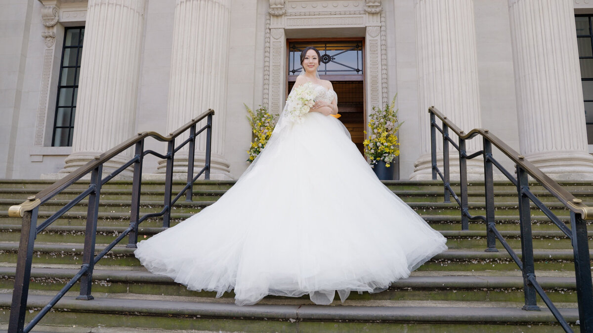

Let's be honest: very few people feel completely natural with a camera pointed at them. As wedding videographers, our goal isn't to make you into a model; it's to capture who you really are. Here are our top tips for posing without it feeling like "posing."
Keep Moving
The biggest secret to great wedding video is movement. Static poses often look stiff on film. Instead of standing still, try walking, swaying, or even just holding hands and moving naturally together. This creates a much more cinematic and fluid feel.

Focus on Each Other
Forget about the camera. Look at each other, talk to each other, laugh at each other's jokes. When you're genuinely engaged with your partner, we can capture those authentic expressions that tell the real story of your day. Those "in-between" moments are often the most beautiful.
Use Your Hands
Unsure what to do with your hands? Interlace your fingers, rest a hand on a shoulder, or gently touch your partner's face. Small, natural gestures add warmth and intimacy to every shot. Avoid keeping your arms straight down by your sides, as this can look a bit rigid.
Trust Your Videographer
We'll give you gentle direction when needed, but mostly we'll let you be you. If we see a great light or a beautiful backdrop, we might ask you to stand in a certain spot, but from there, it's all about your natural interaction. We're there to help you look your best, not to make you do anything that feels uncomfortable.
Relax and Have Fun
The more you're enjoying yourselves, the better you'll look. Take deep breaths, enjoy the moment, and remember that these films are about celebrating your love. When you're having fun, it shows in every frame.